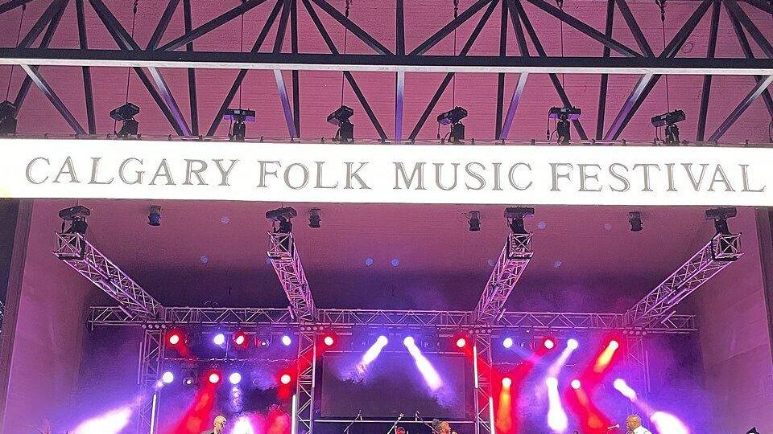

Oasis 2027 turnesi: bilet tarihi ve Avrupa konser şehirleri

Görsel: Calgary Folk Music Festival 2023 audience viewing main stage concert · JollyJamboree · CC0 · Wikimedia Commons
Oasis, 2027'de vereceği 38 konserin şehir ve tarihlerini 14 Eylül'de duyurdu. Biletler daha satışa çıkmadan, turnenin uğrayacağı Avrupa şehirlerine yönelik uçuş ve konaklama aramalarında belirgin bir artış ölçüldü.
Oasis 2027 turnesinde hangi şehirler ve tarihler var?
Euronews'e göre turne 21 Mayıs'ta Glasgow'da başlıyor. Celtic Park'ta beş konser var. Haziran ayı Manchester'a ayrıldı; Time Out'un listesine göre Etihad Stadyumu'nda 11 gece planlandı. Bu iki durak turnenin en yoğun bölümünü oluşturuyor.
Temmuz ayında Avrupa anakarasına geçiliyor. Time Out'un aktardığı takvimde Münih'te Allianz Arena, Barselona'da Estadi Olímpic Lluís Companys, Amsterdam'da Johan Cruijff ArenA, Paris'te Stade de France ve Roma'da Stadio Olimpico ikişer geceyle yer alıyor.
Ağustos ayında turne Kuzey Amerika'ya, Boston ve Las Vegas'a uzanıyor. Eylülde yeniden Avrupa'ya dönülüyor: İrlanda'da Slane Castle ve İngiltere'de Knebworth kapanış durakları. Kaynaklarda Türkiye'de bir konser bulunduğuna dair bilgi yer almıyor.
Oasis biletleri ne zaman satışa çıkıyor?
Euronews Culture'a göre bilet satışına erişmek isteyenlerin 17 Eylül'e kadar grubun resmî sitesi üzerinden kayıt olması gerekiyordu. Kayıt penceresi Time Out'ta 16.00 BST, Euronews'te 17.00 CET olarak verildi; bu iki saat birbirine denk düşüyor.
Euronews'in haberine göre biletler 25-27 Eylül arasındaki üç günlük pencerede satışa çıkıyor. Time Out, satışın Ticketmaster üzerinden yürütüleceğini, yeniden satış işlemlerinin ise Twickets üzerinden yapılacağını aktarıyor.
Time Out, İngiltere konserleri için bilet fiyatlarının hizmet bedelleri dahil 71,50 ile 266,60 sterlin arasında değiştiğini yazdı. Avrupa anakarasındaki konserlerin fiyat aralığı kaynaklarda yer almıyor.
Euronews Culture, 2025 turnesinde uygulanan değişken fiyatlandırmanın tartışma yarattığını ve bazı hayranların biletlere etiket fiyatının üzerinde ödeme yaptığını hatırlatıyor. Aynı yöntemin 2027 satışında kullanılıp kullanılmayacağı henüz açıklanmadı.
Seyahat aramaları neden biletlerden önce arttı?
Euronews, çevrim içi seyahat şirketi eDreams'in verilerine dayanarak duyuru sonrası konser şehirlerine yönelik aramalardaki artışı sıraladı. En yüksek sıçrama yüzde 2.400 ile Glasgow'da görüldü. Manchester yüzde 846, Roma yüzde 659, Barselona yüzde 655 ile onu izledi.
Aynı verilere göre Dublin yüzde 614, Amsterdam yüzde 592, Paris ise yüzde 279 artış kaydetti. Avrupa dışında Las Vegas yüzde 692, Boston yüzde 487 artışla listeye girdi. Rakamlar bilet satışı açılmadan önceki döneme ait.
eDreams'in değerlendirmesine göre bu tablo, konserin tek başına bir gece etkinliği olmaktan çıkıp birkaç günlük seyahat planının merkezine yerleşmesiyle ilgili. Ulaşım ve konaklama aramaları, bilet satın alma adımından önce yapılıyor.
Bilinenler ve henüz bilinmeyenler
Bilinenler: konser sayısı 38, şehir ve stat listesi, kayıt son tarihi, 25-27 Eylül satış penceresi, satış platformları ve İngiltere konserlerinin fiyat aralığı. Time Out'a göre Richard Ashcroft 38 konserin tamamında sahne alacak.
Bilinmeyenler: diğer konuk sanatçılar kesinleşmedi. Time Out, Cast, Ocean Colour Scene ve The Chemical Brothers adlarının söylenti düzeyinde anıldığını, doğrulanmadığını belirtiyor. Avrupa anakarası fiyatları ve ülke bazlı satış saatleri de henüz açıklanmadı.
“Hayranlar artık yalnızca bilet satın almıyor; tek bir konserin etrafına bütün bir seyahat kuruyor.”
— Euronews, 19 Eylül 2026
Takip etmek için
- Grubun resmî sitesi oasisinet.com üzerindeki turne ve bilet duyuruları sayfası.
- Ticketmaster'ın Oasis etkinlik sayfası ve 25-27 Eylül arasındaki satış penceresinin ülke bazlı başlangıç saatleri.
- Yeniden satış için Twickets platformu; Time Out bu platformu resmî yeniden satış adresi olarak gösteriyor.
Sık sorulan sorular
Oasis 2027 biletleri ne zaman satışa çıkıyor?
Euronews'e göre biletler 25-27 Eylül arasındaki üç günlük pencerede satışa çıkıyor. Satış Ticketmaster üzerinden yürütülüyor.
Oasis 2027 turnesinde hangi Avrupa şehirleri var?
Glasgow, Manchester, Münih, Barselona, Amsterdam, Paris, Roma, İrlanda'da Slane Castle ve İngiltere'de Knebworth. Kaynaklarda Türkiye durağı bulunmuyor.
Oasis konser biletleri ne kadar?
Time Out, İngiltere konserleri için fiyatların hizmet bedelleriyle birlikte 71,50-266,60 sterlin arasında olduğunu yazdı. Diğer ülkelerin fiyatları açıklanmadı.
Hangi şehre seyahat aramaları en çok arttı?
eDreams verilerine göre en yüksek artış yüzde 2.400 ile Glasgow'da görüldü. Manchester yüzde 846 artışla ikinci sırada.
Olgular şu yayıncıların haberlerinden derlendi: Euronews, Time Out, Euronews Culture. Metnin tamamı TrendSaphiens tarafından yazıldı; kaynaklarla kelime örtüşmesi %0.0 (eşik %5). Kaynaklarda olmayan bilgi eklenmedi.